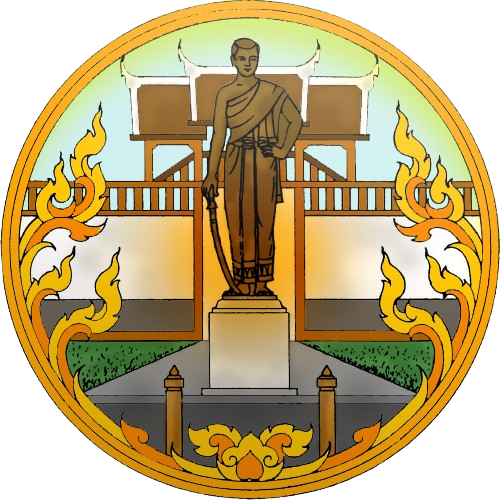

ตราสัญลักษณ์

ตราสัญลักษณ์ประจำจังหวัดนครราชสีมา (โคราช) คือ รูปอนุสาวรีย์ท้าวสุรนารี (คุณหญิงโม) ประดิษฐานอยู่หน้าประตูชุมพล ซึ่งเป็นสัญลักษณ์สำคัญที่สื่อถึงวีรกรรมอันกล้าหาญของท้าวสุรนารีในการกอบกู้เมืองนครราชสีมาให้รอดพ้นจากกองทัพเจ้าอนุวงศ์แห่งเวียงจันทน์ในสมัยรัชกาลที่ 3